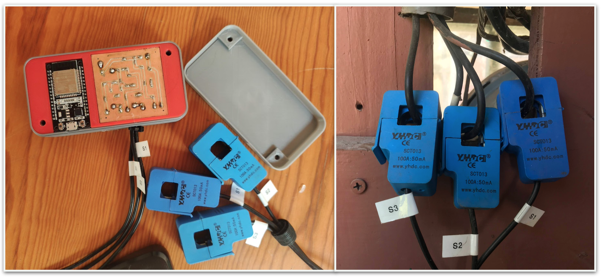
Table of Contents
In this post, I'll explain how to make an IoT energy monitor using a current sensor, an ESP32 and a raspberry pi. Here is a link to the github repo.
Why make an energy monitor
You can make an IoT energy monitor to check on a business or home's electricity use.
In this case, the idea stemmed out as a way to and also to help us in another project: Installing solar panels and measuring their effects on energy consumption.
Solar panels are expensive and the return on investment can take several years, so we wanted to figure out how many were needed to bring electricity costs to a minimum. All panels have a nominal energy production rating, but as we all know, its better to verify before making a substantial investment of any kind.
How the energy monitor works
The theory
Electric power, measured in Watts can be expressed as:
Watts (W) = Current (I) x Voltage (V)
In Mexico voltage is provided at 120V. Other parts of the world use 240V.
If we assume 120V are constant, by measuring the current in our circuit we can calculate reasonably well the electric power consumption at a moment in time.
We can then log the measurements in a database and then add the usage over time to get the total energy use.
As a side benefit, we can also visualize the data and analyze the information in other ways to get insights.
How to built it
To measure current, we can use a SCT-013 non invasive current sensor.
We can connect it to an ESP32 micro-controller to read and send the data through WiFi, using the MQTT protocol.
The ESP32 takes measurements every 5 minutes and transforms the sensor value in mA to an estimate in Amps.
Voltage values are hard-coded to 120V but can you could substitute it with a voltage sensor if you need more precise values.
Measurements are then sent through WIFI by the ESP32 to an MQTT broker installed in a Raspberry Pi.
Using a program called Node-Red, the Raspberry then writes the MQTT values into an influxDB Database for storage.
Finally, we can use an open source data visualization software called Grafana to display the data in a visually appealing and interactive way.
In this way, we can check the IoT energy monitor from a cell phone or computer at any time as long as we're in the same LAN.
Components of the energy monitor
In this case, we had to measure 3 separate electric lines, so we built the energy monitor to receive inputs from three sensors.
An ESP32 micro-controller is needed for the 3 sensor version, but for a 1 sensor version, an ESP8266 will also work. (See the image of the first prototype below).
Hardware component list:
- 1 ESP32
- 3 SCT-013 current sensor
- 3 10uF Capacitors
- 9 10k Resistors
- 3 20k Resistors
- An Electrical connection to power the ESP32
- A breadboard or PCB
- A Raspberry Pi
Software:
- ESP8266 Board library, installed from the Boards Manager
- Arduino Library: EspMQTTClient.h
- Emonlib Library (Part of the open energy monitor project)
- Mosquitto MQTT
Extras:
I designed a 3D printed case for the protect to give it a nicer look. You can find the 3D model here.
For hardware connections, I also made my own PCB using a mini CNC machine. You can also make your wiring look nicer by getting a PCB made by a professional company. Its very cheap, you just have to wait a bit for them to arrive.
For the monitor to work, it must be in range of your WiFi network.
How to build the monitor
Electrical diagram
If you want to build the sensor, you can simply follow the electrical diagram below. The circuit for the first sensor is simply duplicated for the other two sensors:
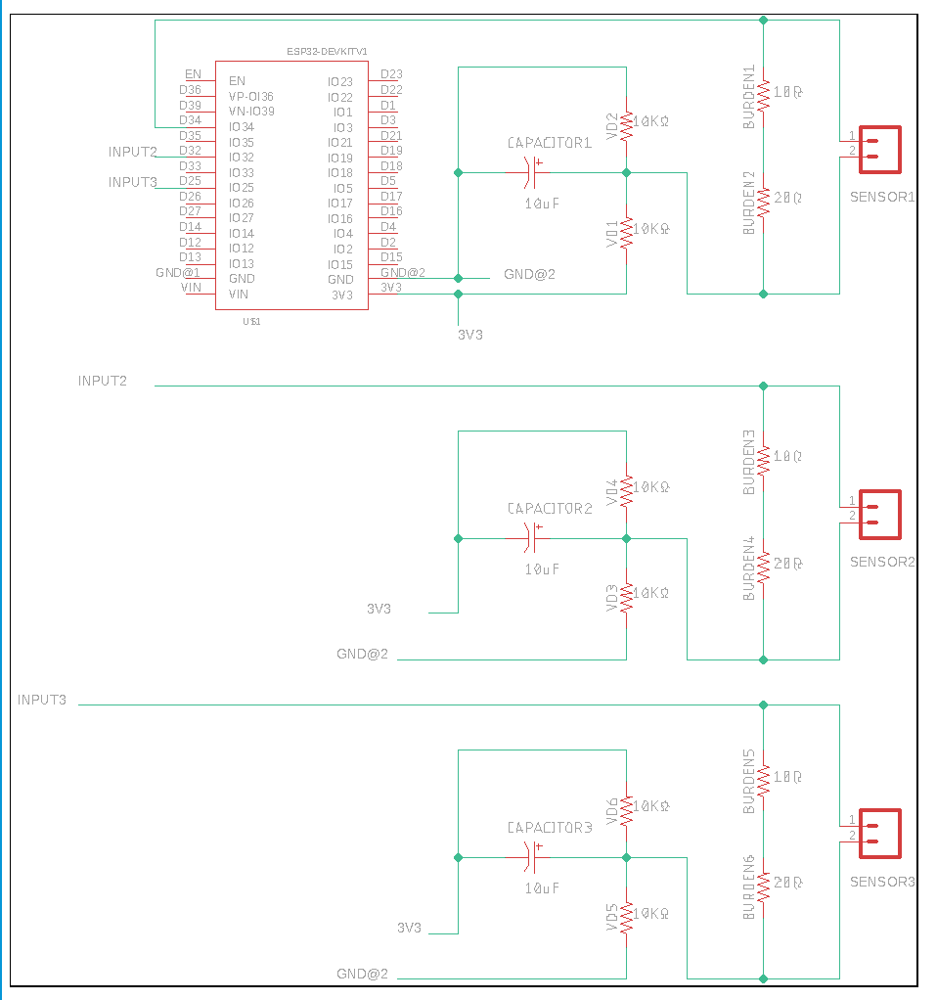
The electrical diagram of the energy monitor. It uses one ESP32 and three SCT-013 current sensors with some resistors and capacitors.
Designing the wiring diagram
To create the diagram above, we reviewed several IoT projects that use the SCT-013 current sensor, which I list in the resources section at the end of the post. After that it was a bit of tinkering and lot of trial and error.
Our initial goal was to get a single sensor to work using a breadboard and an ESP8266. Once that worked, we created a 3D printed version of the diagram to make the wiring easier to understand and share:
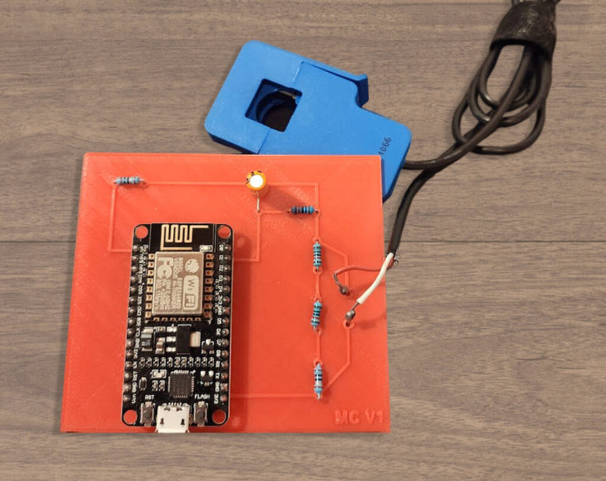
The first energy monitor prototype using an ESP8266 and a single SCT-013 current sensor. The diagram is 3D Printed.
We then went back to the breadboard and added the circuits for the two other sensors. That's when we figured out that the ESP8266 only has one analog input pin, and needed to switch to an ESP32 to use multiple sensors.
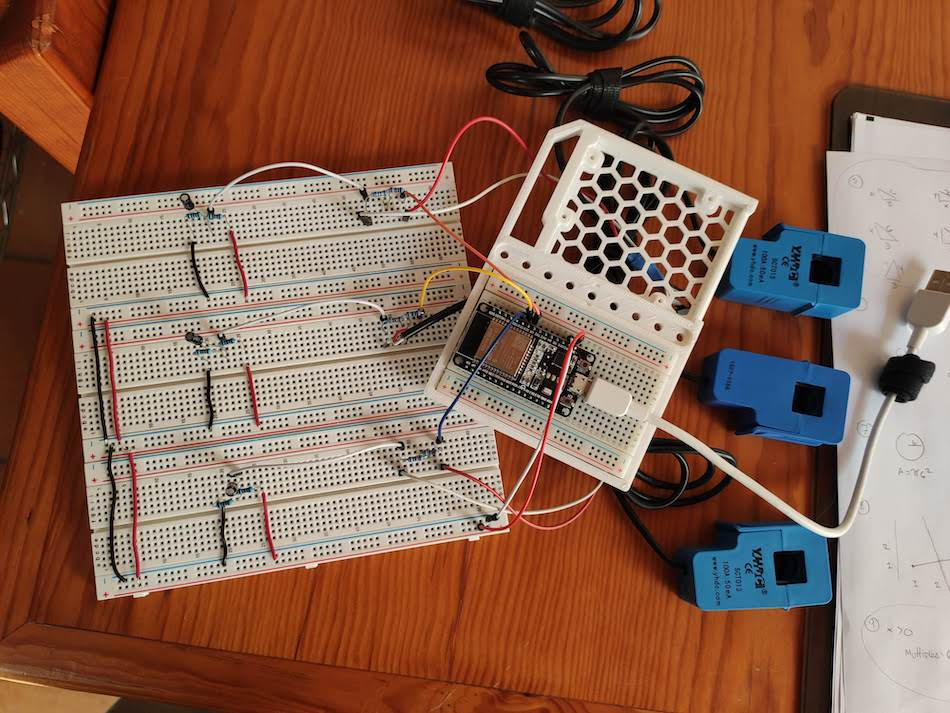
The next version of the IoT Energy monitor prototype using a breadboard and ESP32 and three SCT-013 current sensors
Making the PCB
The setup was working in the breadboard, it was time to move the circuit to a more permanent setup. We decided to make the PCB design and carve the PCB out.
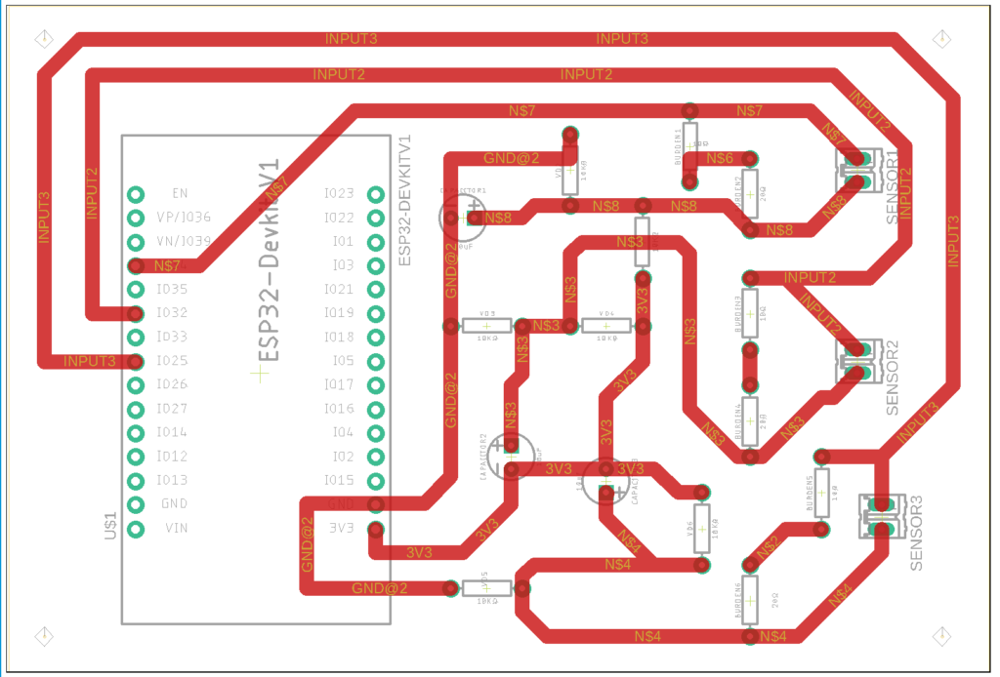
PCB wiring diagram Using Autodesk Eagle
I initially made a wiring diagram using Fritzing, a simple electronic design software, but then had a really hard time translating the output file into CNC instructions, so I ended up switching to Auto desk Eagle, which has a plugin to do just that (PCB Gcode). If you decide to send your PCB design to a manufacturer, Fritzing will work perfectly.
To test everything out, I made a few prototypes using cardboard and then went for the real one:
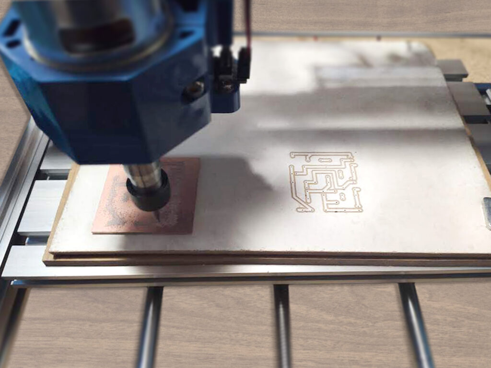
CNC Machine milling a PCB prototype of the DIY Energy Monitor
When you use a CNC router, the copper connections that substitute cables must be thicker than in a normal PCB. Thin connections are a problem with the CNC router, since the router bits can cut into the connectors and break the connection. There is a fair bit of tinkering needed to get it right, but I still think its worth it for rapid prototyping. Here are a few images of how the PCB came out:
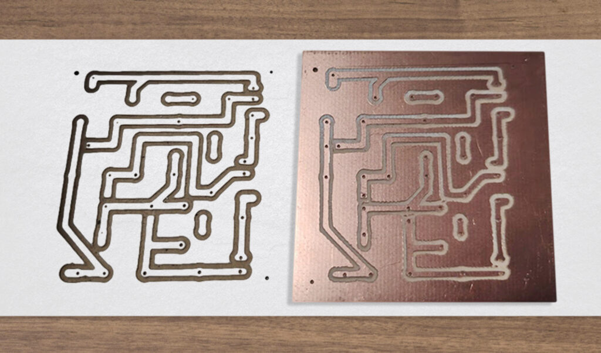
Cardboard and copper PCB tests using the CNC machine for the Energy Monitor
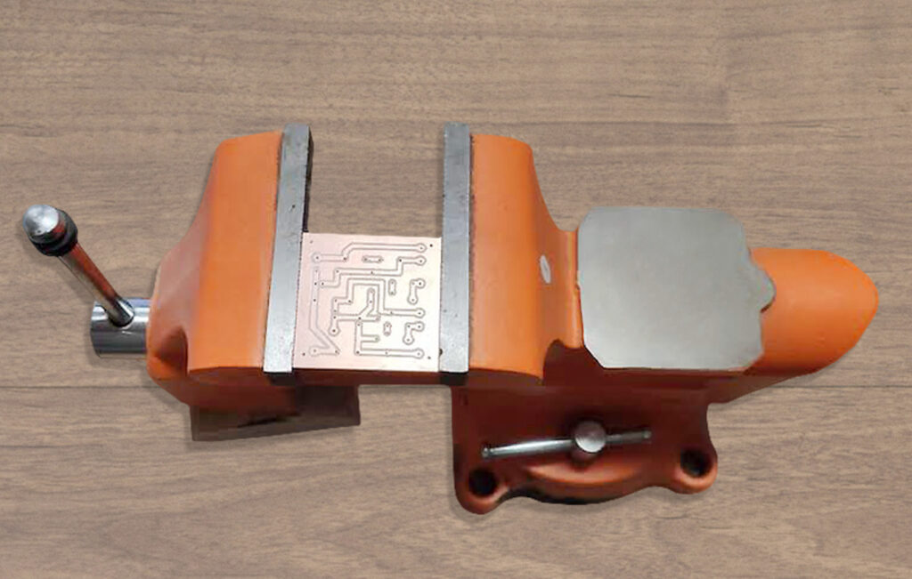
Finished energy monitor PCB in a vice ready to be soldered.
Connecting the components
After making the PCB, we labeled and soldered everything on the other side:
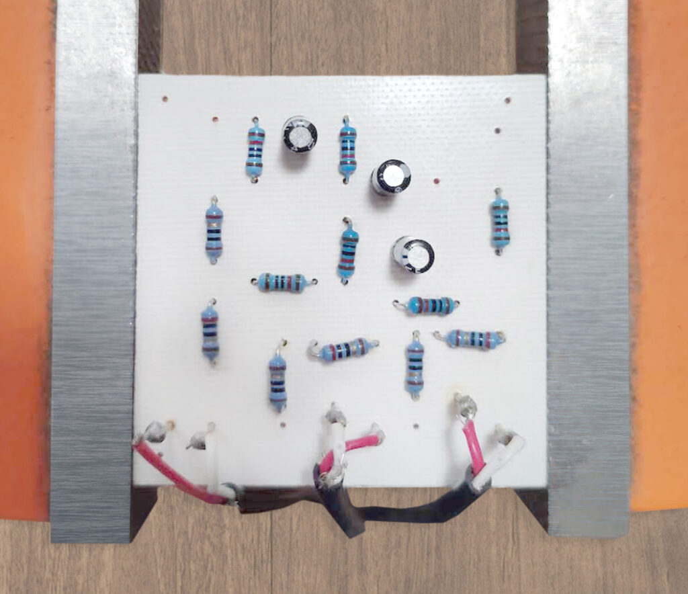
Backside of energy monitor PCB with components ready to solder
To protect the copper from corrosion, I added transparent nail polish to the front.
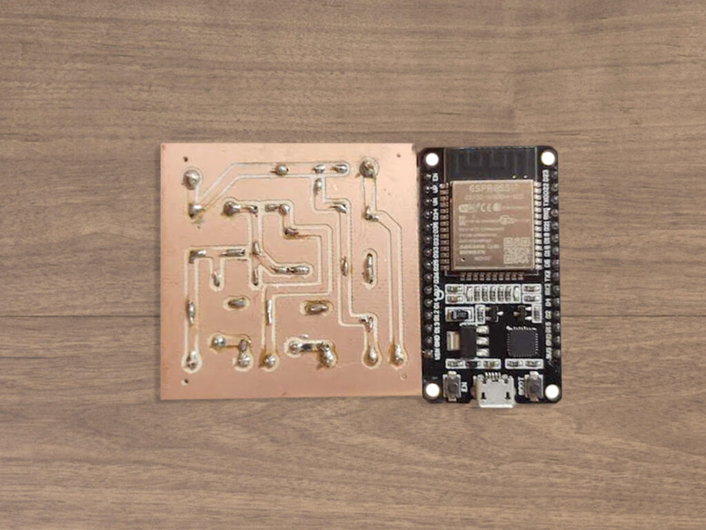
Energy monitor PCB next to ESP32 micro-controller soldered and connected
Once the PCB was ready, we connected everything and tested it.
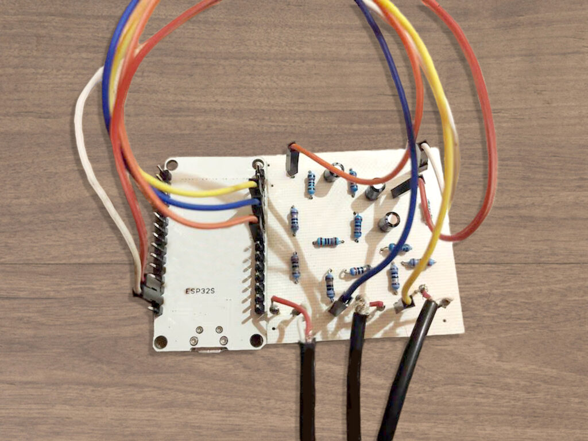
Energy monitor PCB back view with components connected to the ESP32 and the SCT-013 sensors
Some pieces had to be re-soldered because the sensor wires got bent and kept breaking, but in the end everything worked.
Once everything worked, we got the components in the 3D printed case and glued everything together.
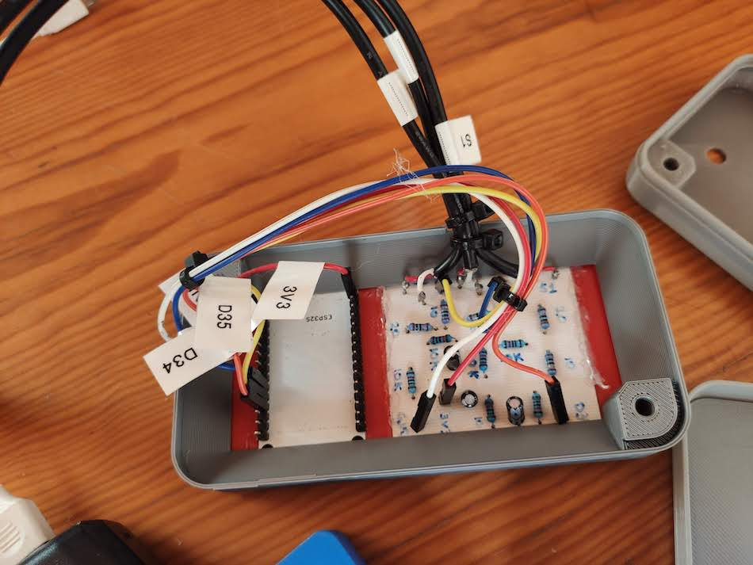
Finished energy monitor with 3D printed case: Back View
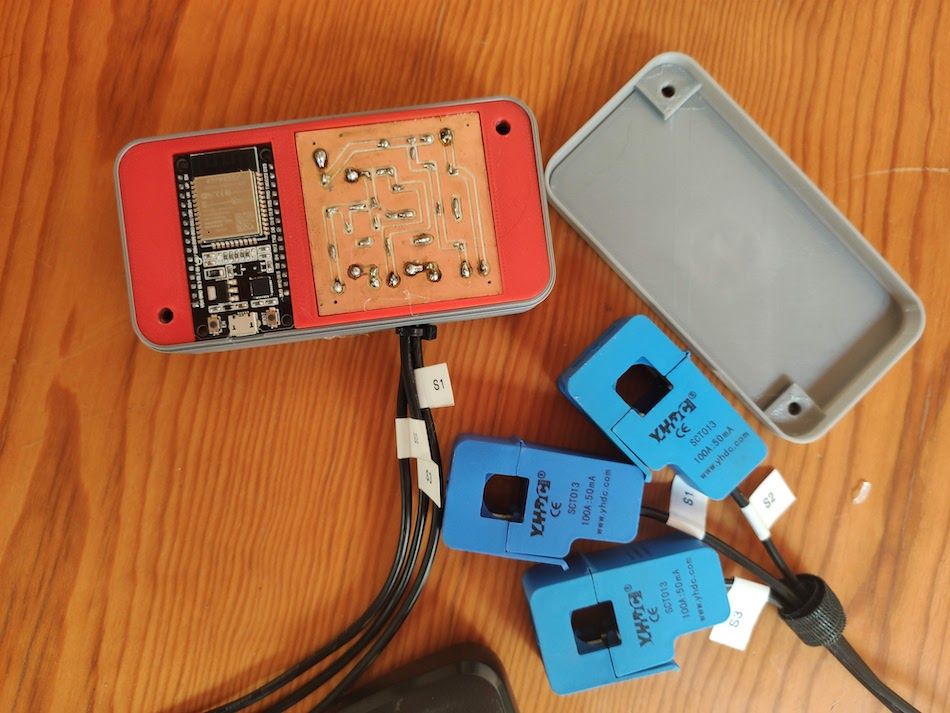
Finished energy monitor with 3D printed case: Front view without lid
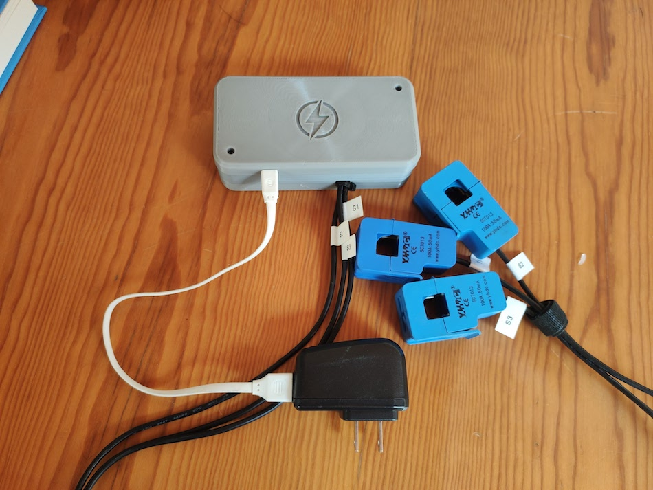
Finished energy monitor with 3D printed case: Front view with lid
Adding the software
After setting up the sensor, we loaded the Arduino file into the ESP32.
This is the code for the sensor. Its also available in the github repo.
C++ (Arduino)
// Code to measure current using three SCT-013 and one ESP32
// Board used: NODEMCU-32S
// Import Emon Library from the open energy monitor project
#include "EmonLib.h"
// Mills Function
const unsigned long event_interval = 300000; // 5 minute interval, 300 second
unsigned long previous_time = 0;
// Include MQTT Connection
#include "EspMQTTClient.h"
// Define input pins
#define ADC_INPUT_1 34 // Sensor 1
#define ADC_INPUT_2 32 // Sensor 2
#define ADC_INPUT_3 35 // Sensor 3
#define WIFI_SSID "<WiFi_username_here>"
#define WIFI_PASS "<WiFi_password_here>"
#define BROKER_IP "<local_ip_address>"
#define BROKER_USERNAME "<broker_username>"
#define BROKER_PASSWORD "<broker_password>"
#define CLIENT_NAME "<MQTT_name_to_identify_device>"
#define BROKER_PORT 1883
#define lastwill_topic "<last_will_topic>"
#define lastwill_text "Current sensor has gone offline unexpextedly."
String client_name = CLIENT_NAME;
String startup_topic = "<startup_topic>";
String medidor_corriente1_topic = "<topic_to_report_sensor_1>";
String medidor_corriente2_topic = "<topic_to_report_sensor_2>";
String medidor_corriente3_topic = "<topic_to_report_sensor_3>";
// Assumed Voltage
float voltajeRed = 120.0;
// Create 3 instances of EnergyMonitor
EnergyMonitor energyMonitor1;
EnergyMonitor energyMonitor2;
EnergyMonitor energyMonitor3;
// Function to connect to MQTT
EspMQTTClient client(
WIFI_SSID,
WIFI_PASS,
BROKER_IP,
BROKER_USERNAME,
BROKER_PASSWORD,
CLIENT_NAME, // Client name to uniquely identify your device
BROKER_PORT
);
void setup()
{
Serial.begin(115200);
// Enable debugging messages sent to serial output
client.enableDebuggingMessages();
// Enable the web updater.
client.enableHTTPWebUpdater();
// MQTT Last Will & Testament
client.enableLastWillMessage( lastwill_topic , lastwill_text);
// Pin where sensors are connected
// Calibration value: Modify when calibrating
energyMonitor1.current(ADC_INPUT_1, 0.145);
energyMonitor2.current(ADC_INPUT_2, 0.145);
energyMonitor3.current(ADC_INPUT_3, 0.145);
}
//MQTT Innitial Connection
void onConnectionEstablished()
{
client.publish(startup_topic, String(client_name + " is now online."));
}
void loop()
{
// MQTT Loop: Must be called once per loop.
client.loop();
// Mills Loop
unsigned long current_time = millis();
// Mills If Statment
if(current_time - previous_time >= event_interval) {
// Number of samples to take
double Irms1 = energyMonitor1.calcIrms(1484);
// Calculate current
double potencia1 = Irms1 * voltajeRed;
// Number of samples to take
double Irms2 = energyMonitor2.calcIrms(1484);
// Calculate current
double potencia2 = Irms2 * voltajeRed;
// Number of samples to take
double Irms3 = energyMonitor3.calcIrms(1484);
// Calculate current
double potencia3 = Irms3 * voltajeRed;
// Display info to serial monitor
Serial.print("Potencia 1 = ");
Serial.print(potencia1);
Serial.print(" Irms 1 = ");
Serial.println(Irms1);
// Display info to serial monitor
Serial.print("Potencia 2 = ");
Serial.print(potencia2);
Serial.print(" Irms 2 = ");
Serial.println(Irms2);
// Display info to serial monitor
Serial.print("Potencia 3 = ");
Serial.print(potencia3);
Serial.print(" Irms 3 = ");
Serial.println(Irms3);
Serial.print('\n');
Serial.print('\n');
// MQTT Client Publisher
client.publish(medidor_corriente1_topic, String(potencia1));
client.publish(medidor_corriente2_topic, String(potencia2));
client.publish(medidor_corriente3_topic, String(potencia3));
Serial.print('\n');
// Update timing for next time
previous_time = current_time;
}
}
Calibrating the sensors
To calibrate the sensors, we used the following procedure:
- Split an extension cord so that the line and neutral wires were separated.
- Hook up the extension cord to the electrical outlet.
- Connect a heater to the extension cord.
- Hook up the sensors to one of the extension cord lines.
- Hook up a clamp meter to the same extension cord line.
- Turn on the heater and compare the values in the sensors to the values in the clamp meter.
- Adjust the calibration value in the code and and try again until readings match.
We also checked that readings were consistent at the different heating ranges.
The lines of code to calibrate the sensors are:
C++ (Arduino)
// Mills Function
const unsigned long event_interval = 300000; // 5 minute interval, 300 second
You can modify this line, to make the sensor report values every 5 seconds instead of every 5 minutes for the calibration test:
C++ (Arduino)
energyMonitor1.current(ADC_INPUT_1, 0.145);
energyMonitor2.current(ADC_INPUT_2, 0.145);
energyMonitor3.current(ADC_INPUT_3, 0.145);
Then to calibrate the values, modify the value of 0.145 until all readings are consistent.
Here is a gif of the procedure:

Energy monitor sensor calibration
Reading the sensor data
Once sensor was calibrated and reporting values it was time to save the data and visualize it.
To do this, we had previously Installed Mosquitto MQTT, InfluxDB and Grafana in a Raspberry Pi 4. Explaining how to do this would take too long, but we followed the instructions explained in this video.
First, we checked that the sensor was sending data correctly. We opened the Arduino serial monitor an got the following confirmation message:
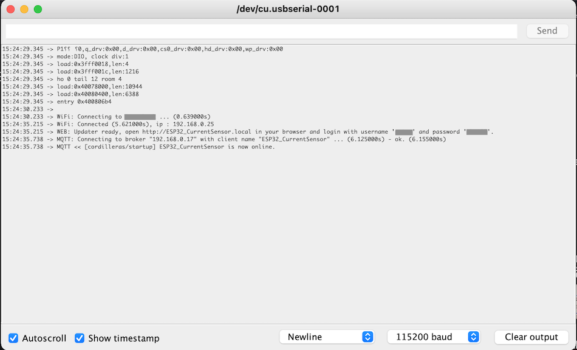
Arduino serial monitor display after loading the code to the ESP32
Then we used SSH to connect my computer to the Raspberry Pi and opened Mosquitto, the MQTT broker to monitor the values that the ESP32 reported in real time.
In this example, we subscribed to a single sensor topic named "Cordilleras/medidor_corriente1", not all three sensors.
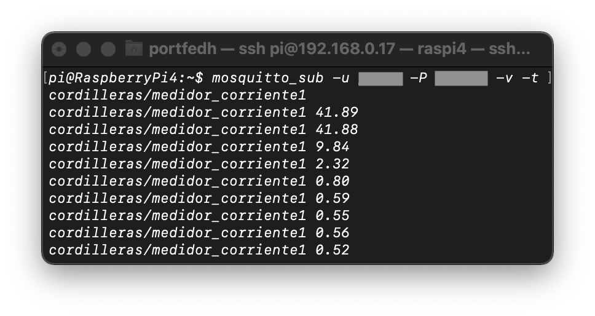
Terminal output, using Mosquitto MQTT and subscribed to sensor1 topic
Saving the values to a database
After checking that MQTT was working correctly we opened Node-Red and configured some nodes to read the MQTT data of the three sensors, saved it as JSON objects, and then wrote them to the InfluxDB database I had previously set up.
Here is an image of the Node-Red setup:
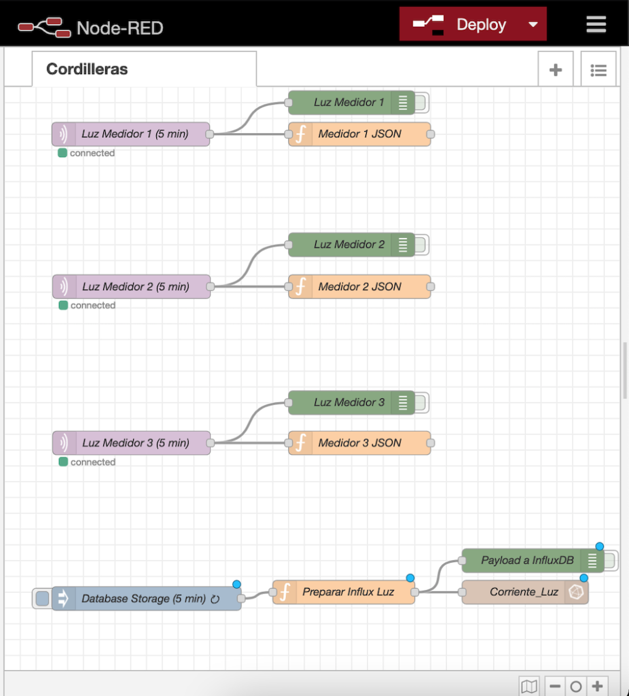
Node-RED setup in Raspberry Pi
The purple nodes read the MQTT information. The orange function nodes save the information of each sensor as a variable. Green Nodes are for debugging and testing. The blue node executes automatically every 5 minutes. The Orange node saves all three variables as a single payload. Finally, the brown node saves the information into InfluxDB.
To check the readings in the database, we logged in using the command line to see the values:
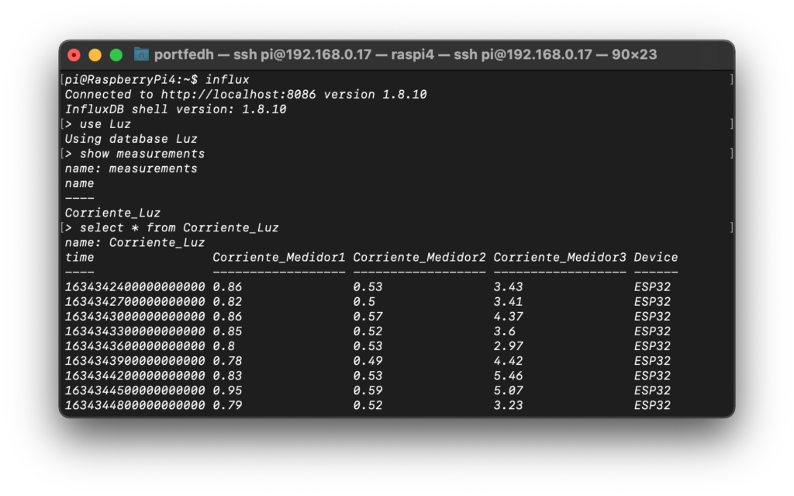
Terminal showing the InfluxDB database with timestamps and energy readings
Visualizing the data
Grafana is a great tool for data visualization because its open source, easy to use, and it has great charts that can be adjusted for different time periods.
Below is an image of how the information looks when displaying a 24 hour period.
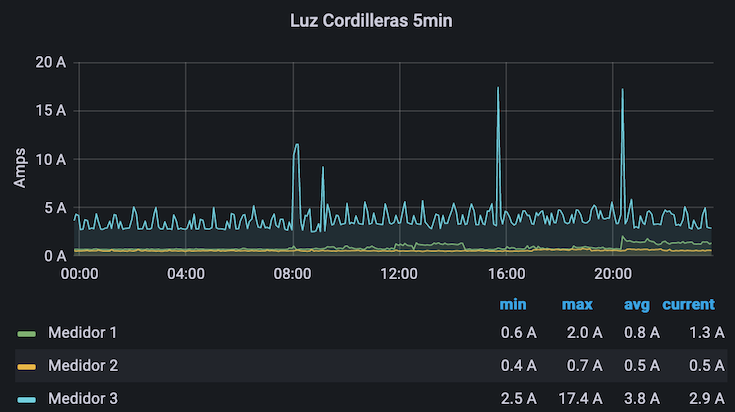
Energy monitor chart using Grafana showing the energy usage over a 24 hour period.
In the graph, you can see how the first electric line (medidor 1) uses more electricity than the second or the third line.
You can also see periodic spikes of about 5 amps. This is the refrigerator motor turning on. Finally, you can see some massive spikes at 8am, 4pm and 8.30pm. This is the microwave turning on during breakfast, lunch and dinner.
Using the sensor data
When comparing the electricity consumption of line 1, 2 and 3, it is clear that loads are unbalanced, since most of the electric consumption is going on in line 1.
We re-arranged the electrical loads so the microwave was in one line, the refrigerator in a separate line and the rest of the electrical outlets in a third line.
During most of the day, the electric load is under 5Amps, which means that generating that amount of energy would be enough to substitute my energy bill during sunlight hours. To answer the initial question that started this project: To reduce the electricity for all day, we would have to buy enough solar panels to generate 5 Amps, or 600 Watts (5amps x 120volts) during 24 hours (14,400W/h).
Average panels produce 270 Watts/hour for a 5 hour period per day (according to solargis's estimate for Mexico City), or 1,350 Watts per day, we would need approximately 11 solar panels to fully offset all electricity costs with renewable energy.
More resources
I hope you found this post interesting.
If you decide to build a current sensor, below you will find some additional resources that we used to make this project possible.
Feel free to contact me if you need any help.
Pablo.


Full Code
Here is the code used in the ESP32 Micro-controller. For more information make sure to head to the github repo.
C++ (Arduino)
// Code to measure current using three SCT-013 and one ESP32
// Board used: NODEMCU-32S
// Import Emon Library from the open energy monitor project
#include "EmonLib.h"
// Mills Function
const unsigned long event_interval = 300000; // 5 minute interval, 300 second
unsigned long previous_time = 0;
// Include MQTT Connection
#include "EspMQTTClient.h"
// Define input pins
#define ADC_INPUT_1 34 // Sensor 1
#define ADC_INPUT_2 32 // Sensor 2
#define ADC_INPUT_3 35 // Sensor 3
#define WIFI_SSID "<WiFi_username_here>"
#define WIFI_PASS "<WiFi_password_here>"
#define BROKER_IP "<local_ip_address>"
#define BROKER_USERNAME "<broker_username>"
#define BROKER_PASSWORD "<broker_password>"
#define CLIENT_NAME "<MQTT_name_to_identify_device>"
#define BROKER_PORT 1883
#define lastwill_topic "<last_will_topic>"
#define lastwill_text "Current sensor has gone offline unexpextedly."
String client_name = CLIENT_NAME;
String startup_topic = "<startup_topic>";
String medidor_corriente1_topic = "<topic_to_report_sensor_1>";
String medidor_corriente2_topic = "<topic_to_report_sensor_2>";
String medidor_corriente3_topic = "<topic_to_report_sensor_3>";
// Assumed Voltage
float voltajeRed = 120.0;
// Create 3 instances of EnergyMonitor
EnergyMonitor energyMonitor1;
EnergyMonitor energyMonitor2;
EnergyMonitor energyMonitor3;
// Function to connect to MQTT
EspMQTTClient client(
WIFI_SSID,
WIFI_PASS,
BROKER_IP,
BROKER_USERNAME,
BROKER_PASSWORD,
CLIENT_NAME, // Client name to uniquely identify your device
BROKER_PORT
);
void setup()
{
Serial.begin(115200);
// Enable debugging messages sent to serial output
client.enableDebuggingMessages();
// Enable the web updater.
client.enableHTTPWebUpdater();
// MQTT Last Will & Testament
client.enableLastWillMessage( lastwill_topic , lastwill_text);
// Pin where sensors are connected
// Calibration value: Modify when calibrating
energyMonitor1.current(ADC_INPUT_1, 0.145);
energyMonitor2.current(ADC_INPUT_2, 0.145);
energyMonitor3.current(ADC_INPUT_3, 0.145);
}
//MQTT Innitial Connection
void onConnectionEstablished()
{
client.publish(startup_topic, String(client_name + " is now online."));
}
void loop()
{
// MQTT Loop: Must be called once per loop.
client.loop();
// Mills Loop
unsigned long current_time = millis();
// Mills If Statment
if(current_time - previous_time >= event_interval) {
// Number of samples to take
double Irms1 = energyMonitor1.calcIrms(1484);
// Calculate current
double potencia1 = Irms1 * voltajeRed;
// Number of samples to take
double Irms2 = energyMonitor2.calcIrms(1484);
// Calculate current
double potencia2 = Irms2 * voltajeRed;
// Number of samples to take
double Irms3 = energyMonitor3.calcIrms(1484);
// Calculate current
double potencia3 = Irms3 * voltajeRed;
// Display info to serial monitor
Serial.print("Potencia 1 = ");
Serial.print(potencia1);
Serial.print(" Irms 1 = ");
Serial.println(Irms1);
// Display info to serial monitor
Serial.print("Potencia 2 = ");
Serial.print(potencia2);
Serial.print(" Irms 2 = ");
Serial.println(Irms2);
// Display info to serial monitor
Serial.print("Potencia 3 = ");
Serial.print(potencia3);
Serial.print(" Irms 3 = ");
Serial.println(Irms3);
Serial.print('\n');
Serial.print('\n');
// MQTT Client Publisher
client.publish(medidor_corriente1_topic, String(potencia1));
client.publish(medidor_corriente2_topic, String(potencia2));
client.publish(medidor_corriente3_topic, String(potencia3));
Serial.print('\n');
// Update timing for next time
previous_time = current_time;
}
}
Get in touch!
I'm currently open to work and I'd be happy to chat.
Feel free to reach out if you are interested in what I can bring
to your project or team.